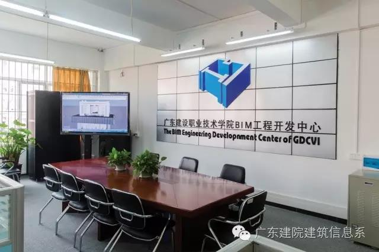
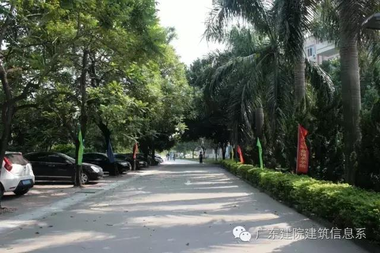
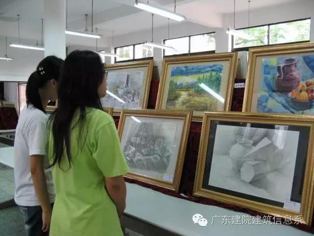
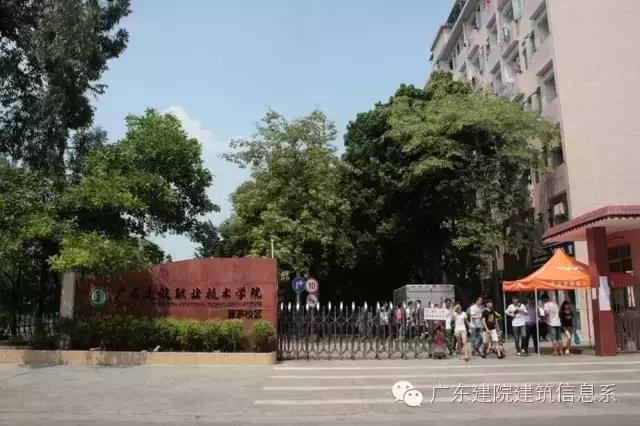
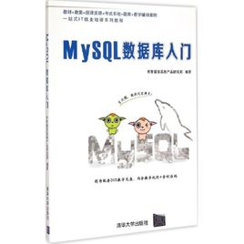
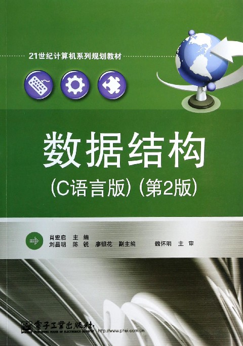

- 学校介绍
- 院系介绍
- 专业介绍
- 课程介绍
- 精彩作品
- 实践经历
- 专业实践
- 社会实践
广东建设职业技术学院——“现代鲁班的摇篮”
广东建设职业技术学院是省内唯一一所公办建筑类高职院，是建筑业高素质技术技能人才培养的主要基地和 “现代鲁班”的摇篮。
办学38年来，学院扎根南粤大地，服务“一带一路”，培养培训了15万多名高素质技术技能型人才，为广东省建设行业与经济社会发展做出了积极贡献。
我院前身是1979年成立的广东省建筑工程技工学校；1986年成立的广东省建筑工程学校；2001年5月经广东省人民政府批准、教育部备案，升格为高职学院。2006年4月，学院由广东省建筑工程集团有限公司主管正式划转广东省教育厅管理。
目前有两个校区，占地面积约400亩，全日制高职在校生7000多人。我院已被省政府确定为第一批入驻广东省清远省职教基地。省发改委已批复我院首期工程可行性研究报告，800亩新校区建设项目预计今年九月动工，明年九月进驻。
办学理念：立德树人、工学交融、创新发展、特色办学。
办学特色：建筑主导、产教整合、实践创业、多元协同。
办学定位：“国内知名、业内领先、服务广东、辐射中南、走向国际”的建筑类高等职业院校；广东省建筑业高素质技术技能人才培养培训的主要基地；“现代鲁班”的摇篮。 行动计划：建新校、上规模、强内涵、促和谐。
办学目标：实现“学校社会知名、办学实力雄厚、学生成长成才、师生幸福乐业”的强校梦。
校企合作深入推进，产教融合成效显著。
学院立足“建设行业”，探索并建构了特色鲜明的“依托行业，工学结合”的人才培养模式。充分发挥依托建筑行业企业的优势，形成了“校企互动”的“四合作四共”模式（合作办学、合作育人、合作就业、合作发展）（人才共育、过程共管、成果共享、责任共担）。
我院与300多家行业企业保持紧密合作关系，并联合成立了广东省建设职业教育集团，形成了有效的校企合作办学体制机制，在现代学徒制试点、职工培训、技术研发等方面广泛深入地开展合作。
开设了3个现代学徒制特色学院——广建中天学院、广建兴业学院、广建斯维尔学院；6个专业开展了现代学徒制试点。“建筑设备协同育人平台”项目获省教育厅“十三五”立项建设。“岭南建筑技术职业教育产教创新基地”项目被列入国家“十三五”职业教育产教融合发展工程规划，项目建成后将成为我省乃至全国集人才培养培训、科技研发、服务产业为一体的建筑类产教融合国家级创新示范基地。
教学改革亮点纷呈，质量工程成果丰硕。
全面实施“教学质量工程”，专业建设、课程建设取得成效。依托建筑行业，主动服务广东省战略性新兴性产业和现代服务产业，构建了以建筑类专业为主体，机电、市政、环保、艺术设计、电子信息、财经等专业协调发展的专业布局。
招生专业30个，涉及8个高职专业大类，14个二级门类，是广东省内开设建筑类专业门类最全的高等职业院校。建有2个中央财政支持建设专业，1 个省级一类品牌专业，3个省级二类品牌专业，5个省级重点专业；国家教指委精品课程1门，省级精品资源共享课程9门，校内实训基地50个(其中中央和省级实训基地9个)，校外实训基地101个，省级大学生校外实践教学基地6项。广东省大学生创业训练项目15项。省级教改项目38项；省级各类教指委项目22项。省级教学成果奖2项。
师资实力雄厚，专兼比例合理。
大力实施强师工程，制订了《学院人才引进与管理办法》，重点引进高层次人才。积极培养高水平专业带头人和专业骨干教师，带动专业教师整体素质的提高。现有专任教师320人，高级职称的105名，研究生学历或学位的190名（其中博士16名），具有“双师”素质的教师达到80%，省级教学团队3个，全国技术能手1名，同时聘请了200多名来自生产一线有熟练技能的技术人员作为兼职教师。聘请了5位广东省首届传统建筑名匠为我院客座教授，建立了大师工作室，传承和弘扬建筑传统技艺。
国际合作深入开展 ， 服务“一带一路”争当排头兵。
国际学院在高职学院率先成立，为服务“一带一路”建设搭建了平台，有力推动了我院培养具有国际视野、国际标准、国际资质的高素质技术技能型人才。
我院被教育部确定为职业教育服务“一带一路”建设首批学校，与中国有色金属矿业集团共同在赞比亚开展职业教育项目，为当地培养急需的高素质技术技能人才。第一批赴赞教师已完成架子工培训工作，获得教育部的表扬。
我院与澳大利亚、新西兰、英国、美国、德国、韩国、波兰、中国台湾地区等境外高等院校和教育机构开展了高层互访、教师培训、师生交流、合作办学等合作项目。
办学效益增强，社会声誉优良。
学院始终把立德树人作为根本任务，重视大学生的思想政治教育和素质教育，注重培养学生的实践能力、创造能力，促使学生德智体美多方面健康协调发展。三年来，学生在各类科技学术、文化艺术大赛中，获得150多项省级以上奖励。
新生入学报到率及毕业生就业率均保持良好的发展态势。近年来，录取新生报到率均超过80%。毕业生总就业率均在98%以上，高于全省平均就业率。获得“广东省高校毕业生就业先进集体”称号。
我院是我省建筑行业依托的主要培训基地，是唯一授权能在全省开展建筑现场专业人员培训的机构。建校以来，为企业法定代表人、一级项目经理、下岗职工、进城务工人员等超过15万人提供了培训服务。与香港发展局和建造业议会合作开展在港建筑从业人员职业技能培训和岗前训练。
学院社会影响力不断增强。积极承办省级技能竞赛并取得优异成绩，在全国职业院校技能大赛高职组建筑工程识图赛项中获得团体二等奖。学院现为广东省高职教育建筑与房地产类专业教学指导委员会主任委员单位；广东省高职现代学徒制委员会主任委员单位；广东中华职业教育社团体社员。
发展愿景
到2020年，实现高职在校生规模不少于15000人，内涵建设达到省级一流学校水平。全面建立与我省建筑产业及区域经济发展相适应的产教融合机制，人才培养的质量持续提高，服务行业及区域经济社会发展的水平显著提升，建成“国内知名、业内领先、服务广东、辐射中南、走向国际”的建筑类高职院。
建筑信息系
建筑信息系以培养建筑业信息化人才为核心，集建筑信息模型(BIM)技术应用、技术咨询与服务、人才培养为一体。建筑信息系经过多年的发展，开设了计算机应用技术专业、数字媒体应用技术、软件技术、建筑动画与模型制作、建设项目信息化管理5个专业。拥有150多台大型规模建筑模型设计工作站、15台复杂建筑模型设计工作站、两台BIM存储服务器。
各个专业与多家企业在校内共建了涵盖建筑信息模型、软件开发、三维制作、创业基地等多个工作室实训基地，实施“项目+工作室”的教学模式，“订单式”培养符合企业需求的人才，学生在校学习期间能以商业化模式参加企业实际项目制作，学生的专业技能与市场“零距离”接轨。
- 
- 
- 
软件技术简介
对于学习软件技术专业的同学来说，现在软件技术专业也是一个发展得比较有就业优势的专业，而且学习软件技术专业的人也是有很多。下面大家就跟着小编一起去了解一下，广东建设职业技术学院软件技术专业介绍吧。

本专业培养具有与本专业领域方向相适应的素质和能力，具有良好的职业道德，学生掌握本专业领域方向的技术知识，掌握软件技术在编码、测试和项目管理方面的技能，具备相应实践技能及较强的实际工作能力，德、智、体、美等方面全面发展的高素质技能型专门人才，达到现代企业的用人标准。

主干专业课程有：数据结构、数据库原理、C/C++语言程序设计、微机原理与接口技术、软件工程、计算机网络与组网技术、基于.net的程序设计、Java、J2EE应用与开发等。毕业考试合格，可获取大学专科毕业证书;还可在校内考取计算机应用水平考试的各级等级证书和诸多培训机构的考试认证。备注：学生可报读我院与微软公司合作办学的微软特色班，需另外交给微软公司微软课程考证费3900(三年)。特色课程有：数据访问技术-ADO.NET2.0、SQL Server2005数据库开发与实现、Web应用开发-ASP.NET2.0、NET Framework2.0程序设计、基于.NET Framework 2.0的Windows窗体应用开发、实用软件工程方法。
C程序设计（第四版）
由谭浩强教授著、清华大学出版社出版的《C程序设计》是一本公认的学习C语言程序设计的经典教材。根据C语言的发展和计算机教学的需要，作者在《C程序设计(第三版)》的基础上进行了修订。本书按照C语言的新标准C 99进行介绍，所有程序都符合C 99的规定，使编写程序更加规范；对C语言和程序设计的基本概念和要点讲解透彻，全面而深入；按照作者提出的“提出问题—解决问题—归纳分析”三部曲进行教学、组织教材；本书的每个例题都按以下几个步骤展开：提出任务—解题思路—编写程序—运行程序—程序分析—有关说明。符合读者认知规律，容易入门与提高。

网页设计与制作案例教程（第3版）
全书1分为16章，第1～2章介绍了网页、网站建设流程、HTML、网页版式设计与色彩搭配等基础知识；第3～14章系统地介绍了网页设计制作软件Dreamweaver CS6的功能和设计制作各类网页的方法技巧；第15～16章以Div+CSS作为技术架构，分别介绍了网站前台设计制作的综合应用实例，综合应用实例也可作为实训周的实训参考内容。 本书配有丰富的教学资源，书中重要知识要点和操作技能可以通过配套的微课进行学习。通过学习任务和“由简到繁、由易到难、承前启后”的阶梯式系列案例，使读者轻松地掌握设计制作各类网页的方法和技能，并起到举一反三的作用。本书内容组织形式新颖、学习任务明确、操作步骤讲解详尽、重点突出，非常符合高职高专学生的认知规律。
MySQL数据库入门
MySQL数据库是以“客户端/服务器”模式实现的，是一个多用户、多线程的小型数据库。MySQL因其稳定、可靠、快速、管理方便以及支持众多系统平台的特点，成为世界范围内最流行的开源数据库之一。《MySQL数据库入门》就是面向数据库初学者特地推出的一本进阶学习的入门教材，本教材站在初学者的角度，以形象的比喻、丰富的图解、实用的案例、通俗易懂的语言详细讲解了MySQL的开发和管理技术。
全书共8章，第1～5章主要讲解了MySQL中的基础操作，包括数据库基础知识、MySQL的安装配置及使用、数据库和表的基本操作、单表中数据的增删改查操作以及多表中数据的增删改查操作。第6～8章则围绕数据库开发的一些高级知识展开讲解，包括事务与存储过程、视图、数据的备份与还原以及数据库的用户和权限管理。
本教材附有配套视频、习题、教学课件等资源，而且为了帮助初学者更好地学习本教材中的内容，还提供了在线答疑，希望得到更多读者的关注。
本教材既可作为高等院校本、专科计算机相关专业的数据库开发与管理教材，也可作为数据库开发基础的培训教材，是一本适合广大计算机编程爱好者的优秀读物。
数据结构
肖宏启等编著的《数据结构(C语言版第2版》是《数据结构(c语言版)》的第2版，对常用的数据结构做了系统的介绍，力求概念清晰，注重实际应用。主要内容包括：数据结构的基本概念，算法描述和算法分析初步，线性表、链表、栈、队列、串、广义表、树、图等结构，查找和排序的各种方法，另外还用一章的篇幅详细介绍了链式存储结构以加深读者的理解。每章均列举了典型应用实例，并配有算法和程序以供教学和实践使用。
《数据结构(C语言版第2版》作为“21世纪计算机系列规划教材”之一，内容丰富，层次清晰，讲解深入浅出，可作为高等院校应用型本科、专科及高等职业院校计算机类专业学生数据结构课程的教材，也可以作为大学非计算机专业学生的选修课教材和计算机应用技术人员的自学参考书。